Instrument Panel
Instrument Panel
Removing
- Set parking brake.
- Select rearmost driving range position.
- Remove driver airbag unit --> [ Driver Airbag ] Driver Airbag
- Remove steering wheel --> [ Steering Wheel ] Steering Wheel
- Remove steering column trim --> [ Steering Column Trim ] Service and Repair
- Remove side instrument panel covers --> [ Instrument Panel Side Covers ] Instrument Panel Side Covers.
- Remove footwell covers --> [ Footwell Covers ] Footwell Covers
- Remove instrument shroud --> [ Instrument Shroud ] Instrument Shroud
- Remove upper A-pillar trim --> [ Upper A-Pillar Trim ] Upper A-Pillar Trim
- For vehicles without navigation or radio, pry radio block-off cover - 1 - out of bracket using wedge (T10039/1).
- If radio - 2 - is installed, remove it --> Communication 91 Removal and Installation.
- If navigation display and operating unit - 3 - is installed, remove it --> Communication 91 Removal and Installation.
- Remove air conditioning operating unit - 4 -
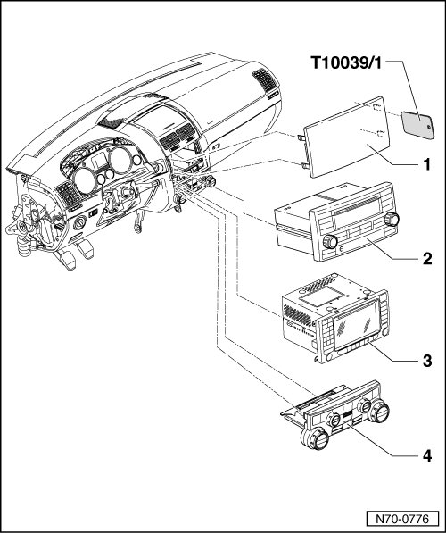
There are two existing variations of the trim - 1 -:
• Trim with threaded pin - 4 - and lock washer - 5 -.
• Trim without threaded pin and lock washer.
• For a better overview, the lock washer - 5 - is shown partially removed in the illustration. When installed, the lock washer is accessible through the radio opening, but not visible.
- Reach through the radio opening and determine by touch if the trim possesses a threaded pin - 7 - and a lock washer - 5 -.
Trim with threaded pin and lock washer
- Reaching through the radio opening, use a small screwdriver to pry the wings - 6 - of the lock washer - 5 - up and pull off the lock washer - 5 - from the threaded pin - 4 -.
• Make sure that the lock washer does not fall into the cockpit.
• The lock washer - 5 - is destroyed during removal. It must be replaced for assembly.
• If the vehicle was equipped with trim without a threaded pin and lock washer and the trim is exchanged for replacement trim with a threaded pin and lock washer, the securing clip in the area of the threaded pin must be removed before assembly.
• Check if the middle of the trim is equipped with a securing clip in the area of the threaded pin. If not, a securing clip must be supplemented at this position.
• After installing the trim - 1 - push on the new lock washer - 5 - in the illustrated position until it is pressed against the surface (do not turn).
Both variations
- Pry trim strip - 1 - out of mounting using wedge (T10039/1) and detach adjusting wheel - 2 - from trim strip.
- Disconnect adjusting wheel housing from wiring harness if vehicle has vent illumination.
- Using a small screwdriver, push latch mechanism - 3 - forward in direction of travel and remove ignition key.
- Pry trim strip - 7 - out of mountings in trim strip using wedge (T10039/1).
- Pry trim strip - 8 - out of mounting using wedge (T10039/1) and detach adjusting wheel - 9 - from trim strip.
- Disconnect adjusting wheel housing from wiring harness if vehicle has vent illumination.
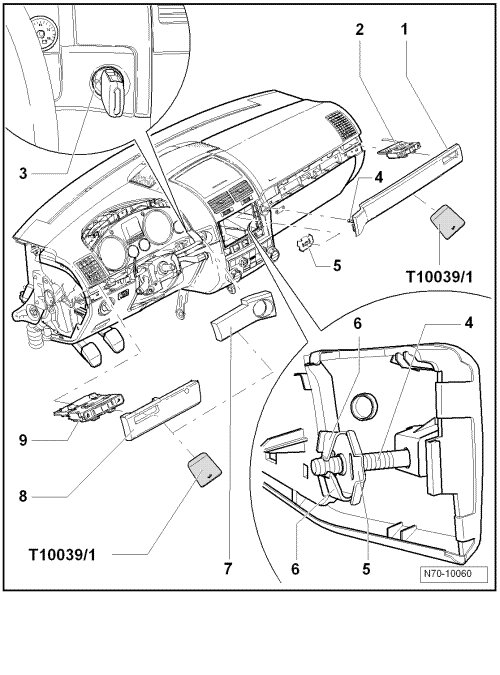
- Remove bolts - 1 -, - 2 -, - 3 -, - 4 -, - 5 - and - 6 -.
• When frame is being installed, bolts must be installed in this order.
- Remove frame - 7 - from instrument panel and disconnect wiring harnesses (depending on vehicle equipment) from switch strip.
- Remove 2 bolts - 8 - and remove cover above steering column - 9 -.
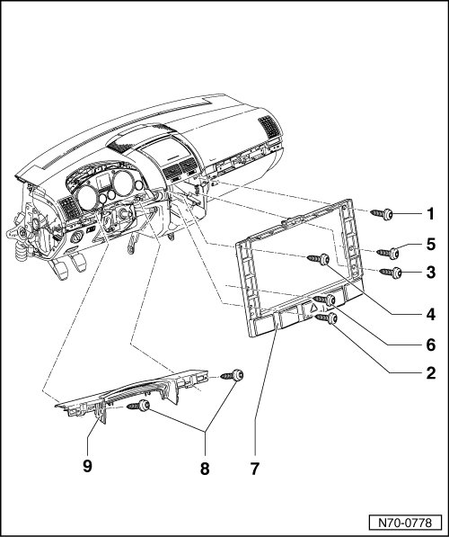
- Remove lining mat - 1 - from glove compartment.
• Depending on version, the bolt - 3 - may also be a component part of the footwell cover. In this case, the bolt is already removed.
- Remove the bolts - 2 -, - 3 -, - 4 - and - 5 -.
• When driver side trim is being installed, bolts must be installed in this order.
- Separate driver side trim - 6 - from instrument panel and disconnect release from parking brake - 7 -.
- Disconnect rotary light switch and headlight range regulator from respective wiring harnesses.
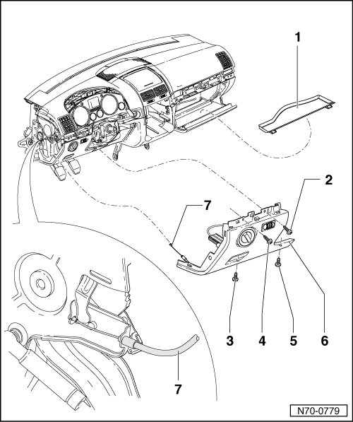
- Remove bolts - 1 - (Qty. 13) and separate front passenger side trim - 2 - from instrument panel.
• The vehicle wallet compartment is fastened to the passenger side trim with two bolts. Both of these bolts do not need to be removed.
- Disconnect contact switch for glove compartment light from wiring harness.
- Disconnect glove compartment light from wiring harness.
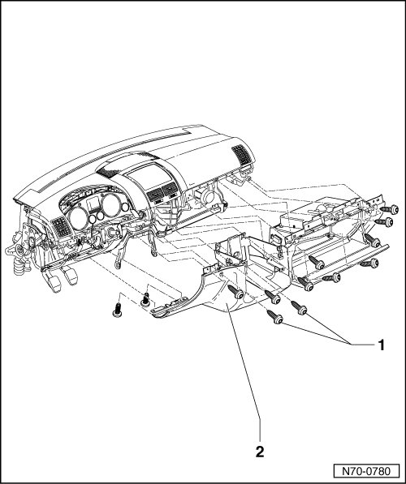
- Remove the bolts - 1 - and - 2 - from instrument shroud bracket - 3 -.
- Remove bolts - 4 -, - 5 - and - 6 - from instrument panel insert - 7 -.
• When instrument shroud bracket and instrument panel insert are being installed, bolts must be installed in this order.
- Remove instrument shroud bracket from instrument panel.
- Remove instrument panel insert from instrument panel and separate the 2 connectors.
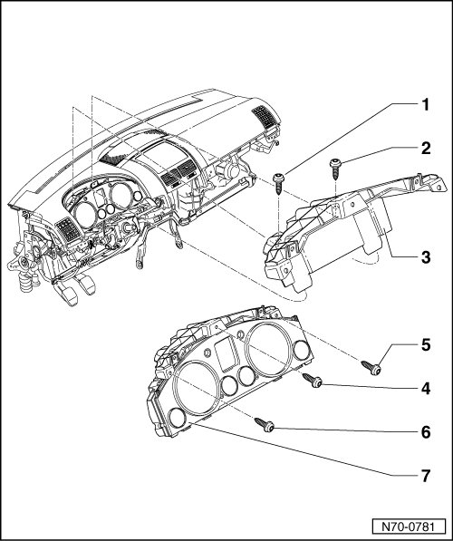
- Remove 4 bolts - 1 - and remove knee bolster on driver side.
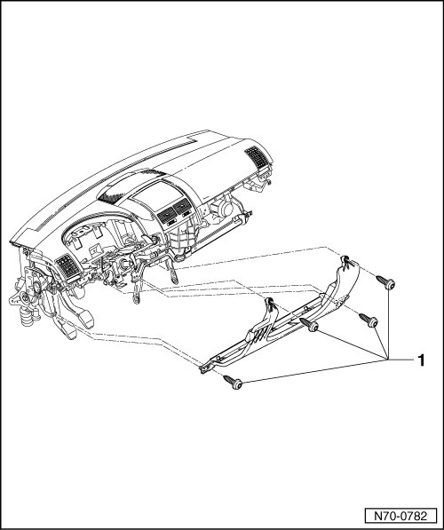
- Pry the vent grille - 1 - out from the instrument panel insert using wedge (T10039/1).
- Check whether loudspeaker - 2 - is installed under vent grille.
- If loudspeaker is installed, remove it upwards out of instrument panel and disconnect from respective wiring harness.
- Check whether vehicle has Climatronic.
- For vehicles with Climatronic, pull sun sensor - 3 - out of instrument panel and disconnect it from respective wiring harness.
- For vehicles without Climatronic, the cover - 4 - which is installed does not need to be removed.
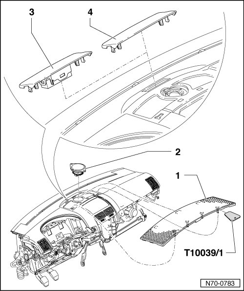
Only vehicles with the following:
• Climatronic
• Loudspeaker
• Parking distance warning system
• Storage bin
- Open compartment, grasp housing - 1 - with both hands and pull out of dash panel mountings with a jerk.
- When removing, grasp housing above vents and pull backwards (opposite direction of travel).
• Before installing housing, check that the fastening clips on sides (Qty. 6) are correctly positioned in mounting for housing.
- For vehicles with vent illumination, detach wiring harness from housing - 1 -.
• When installing instrument panel, ensure that the wiring harnesses and sealing plugs are properly routed.
- Disconnect the wiring harness (speaker/sun sensor) from the instrument panel and remove the wiring harnesses from the instrument panel.
- On vehicles with storage bin, separate the respective wiring harness.
• Removal of the storage bin is not necessary.
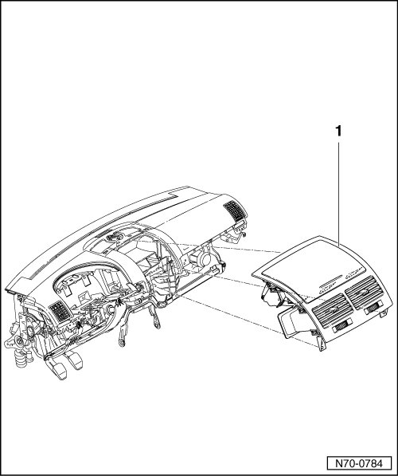
All vehicles:
- Remove two bolts - 1 - (8 Nm).
- Remove bolt - 2 - (8 Nm).
- Loosen 2 nuts each - 3 - and - 4 - (8 Nm).
• For clarity, the four nuts are shown removed. It is not necessary to remove the front passenger airbag from the instrument panel.
- Disconnect wiring harnesses from front passenger airbag.
• After the instrument panel has been installed, the front passenger airbag module must be positioned precisely in the mountings under the instrument panel.
• To secure free of stress, first install bolts - 1 - and - 2 - and then nuts - 3 - and - 4 -.
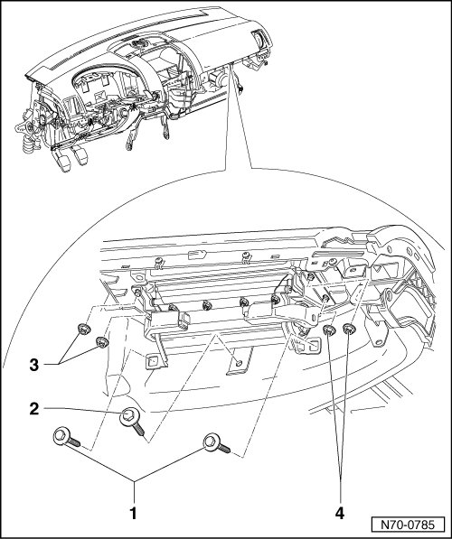
- Remove union nut - 1 - from ignition lock - 2 - and remove ignition lock from instrument panel.
- Remove bolts - 3 - (Qty. 7) and remove instrument panel from vehicle.
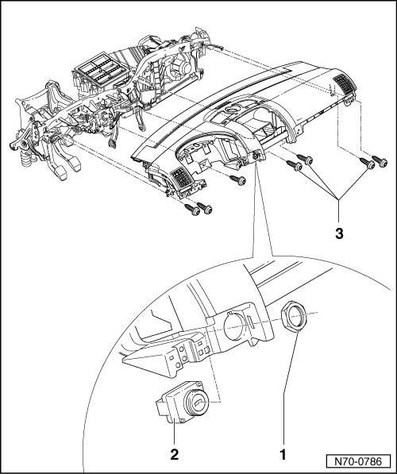
Installing
- Perform the steps used for removal in reverse order.
• When installing instrument panel, ensure it is positioned precisely in the mountings in the windshield transition area.